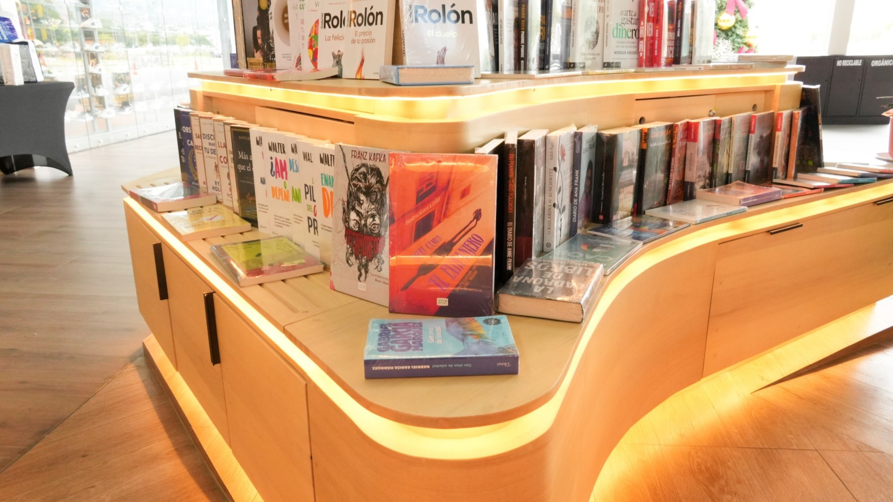
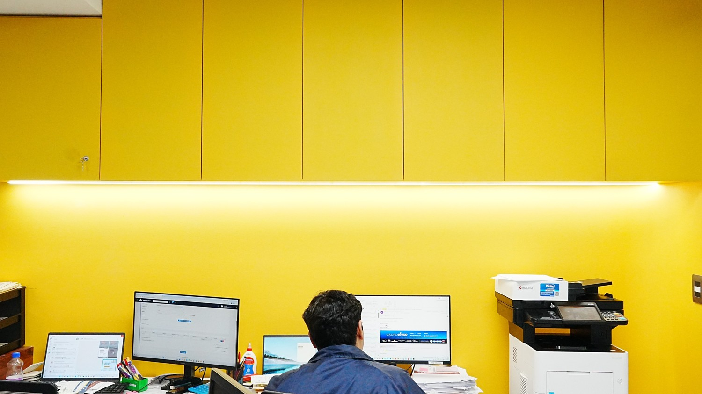
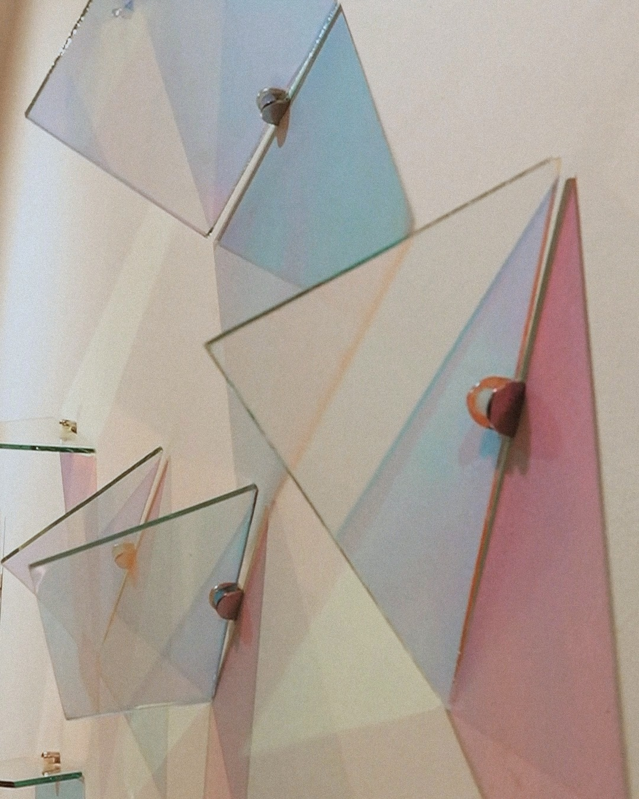
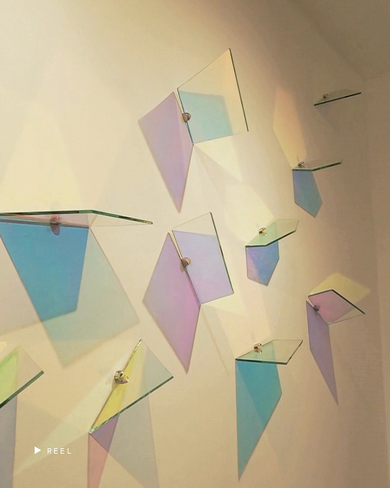
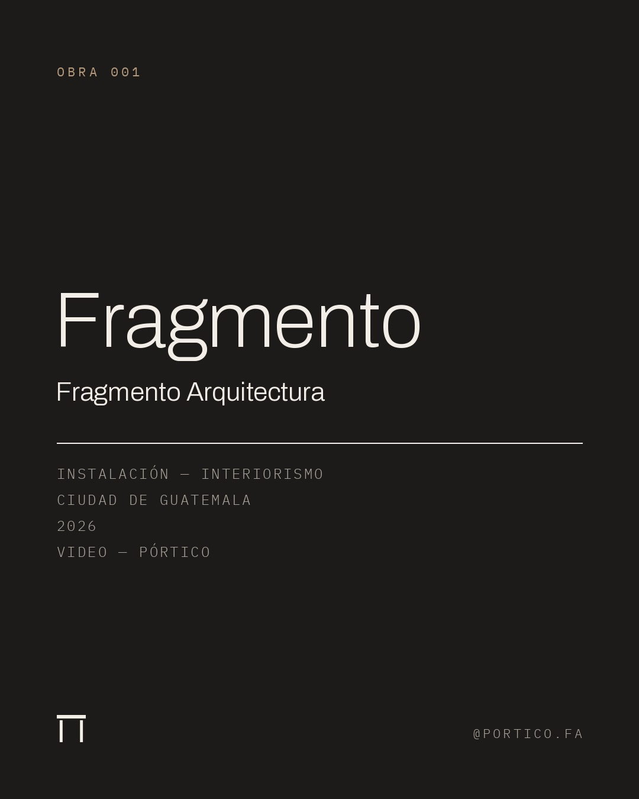
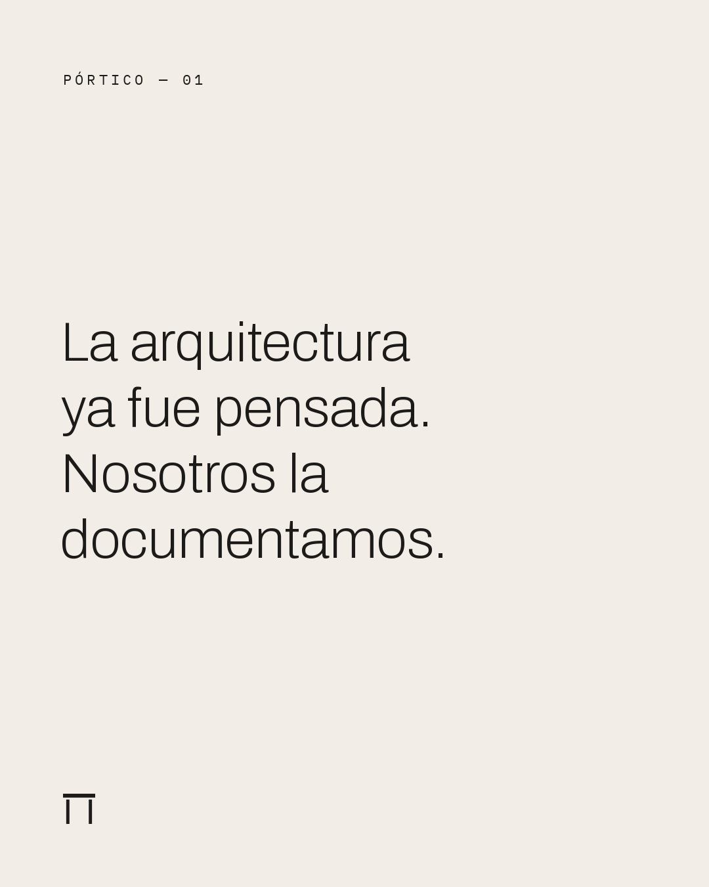
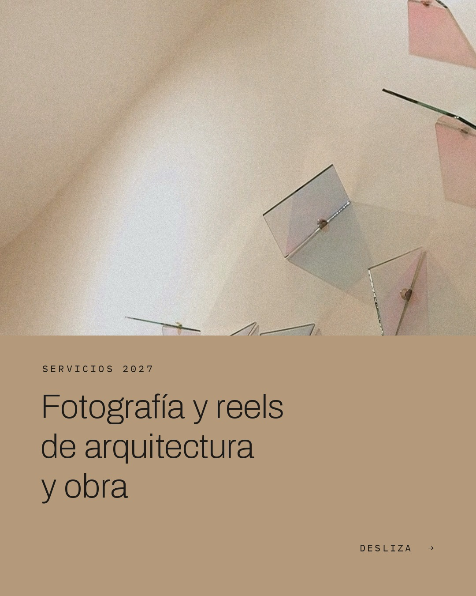

Manual de marca y estilo — v1 · Noviembre 2026

Cómo se ve, cómo habla y cómo publica Pórtico. Toda pieza de la marca, de una cotización a un reel, sale de estas reglas.
Pórtico03 — Color
Paleta
Colores de materiales, no de pantalla.
Hueso#F2EEE7 — 60 % · fondos
Carbón#1C1B19 — 25 % · texto
Travertino#B49A7A · 10 %
ProporciónMucho hueso, carbón para el texto, travertino como acento. Gris piedra (#6E6A64) solo para textos secundarios.
AcentoEl travertino nunca va en textos largos: solo etiquetas, una cifra o un bloque de color.
ProhibidoBlanco puro, negro puro, colores saturados y neones. Las fotos ponen el color; la marca, la calma.
Manual de marca04
Pórtico05 — Estilo de imagen
El look Pórtico
Color fiel a la obra.
Las fotos y los videos se entregan con su color original, sin filtros. La madera, la luz y los colores del proyecto son decisiones del autor: Pórtico los documenta tal como son.
Sí
- Verticales rectas
- Luz natural, horas doradas
- Espacio negativo
- Detalle de material y textura
- Tomas lentas y estables
No
- HDR exagerado
- Gran angular que deforma
- Filtros que cambien el color
- Personas posando a cámara
- Textos sobre la foto

Kishi Books — luz cálida de la obra
Navante — color por función
Manual de marca06
Pórtico06 — Instagram: cuadrícula
Sistema de cuadrícula
El perfil se lee como una revista.
Las imágenes mandan y los posts tipográficos marcan el ritmo. Si alguien abre el perfil sin leer nada, debe entender en 3 segundos qué hace Pórtico y con qué nivel.
RitmoPor cada 3 posts: 2 de imagen y 1 tipográfico o reel.
Columna centralLos posts tipográficos van en la columna del centro, cada dos filas, para formar una línea vertical.
Una obra por filaPublicar cada proyecto en bloques de 3 para que cada fila cuente una sola historia.
Formato1080 × 1350 px (4:5). La cuadrícula muestra el centro 3:4: nada importante a menos de 96 px de los bordes laterales.
Cadencia3 posts por semana. Lunes: obra · Miércoles: reel · Viernes: ficha o manifiesto.
ProducciónLas plantillas salen de marca/posts/generar_posts.py.
Manual de marca07
Pórtico07 — Instagram: tipos de post
Plantillas
Cinco tipos de post. Ni uno más.

ObraImagen a sangre, sin texto. Es el 60 % del perfil.
ReelPortada limpia con la etiqueta REEL. Un reel por semana.
Ficha de obraObra, autor, lugar, año y créditos. Abre cada proyecto.
ManifiestoUna frase de marca, máximo 12 palabras. Hueso o carbón.
Carrusel de servicioPortada travertino para explicar servicios o procesos.
Manual de marca08
Pórtico
La obra va primero.
Pórtico firma al pie.
 @portico.fa — WhatsApp +502 5413 1753
@portico.fa — WhatsApp +502 5413 1753